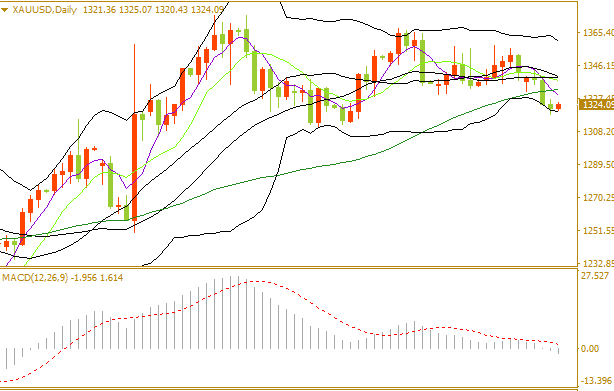

应用原则：
1.当DIF由下向上突破MACD，形成黄金交叉，既白色的DIF上穿黄色的MACD形成的交叉。同时BAR(绿柱线)缩短，为买入信号。
2.当DIF由上向下突破MACD，形成死亡交叉，既白色的DIF下穿黄色的MACD形成的交叉。同时BAR(红柱线)缩短，为卖出信号。

3.顶背离：当股价指数逐波升高，而DIF及MACD不是同步上升，而是逐波下降，与股价走势形成顶背离。预示股价即将下跌。如果此时出现DIF两次由上向下穿过MACD，形成两次死亡交叉，则股价将大幅下跌。
4.底背离：当股价指数逐波下行，而DIF及MACD不是同步下降，而是逐波上升，与股价走势形成底背离，预示着股价即将上涨。如果此时出现DIF两次由下向上穿过MACD，形成两次黄金交叉，则股价即将大幅度上涨。
MACD主要用于对大势中长期的上涨或下跌趋势进行判断，当股价处于盘局或指数波动不明显时，MACD买卖信号较不明显。当股价在短时间内上下波动较大时，因MACD的移动相当缓慢，所以不会立即对股价的变动产生买卖信号。
MACD主要是利用长短期的二条平滑平均线，计算两者之间的差离值，作为研判行情买卖之依据。MACD指标是基于均线的构造原理，对价格收盘价进行平滑处理(求出算术平均值)后的一种趋向类指标。它主要由两部分组成，即正负差(DIF)、异同平均数(DEA)，其中，正负差是核心，DEA是辅助。DIF是快速平滑移动平均线(EMA1)和慢速平滑移动平均线 (EMA2)的差。
在现有的技术分析软件中，MACD常用参数是快速平滑移动平均线为12，慢速平滑移动平均线参数为26。此外，MACD还有一个辅助指标——柱状线 (BAR)。在大多数技术分析软件中，柱状线是有颜色的，在低于0轴以下是绿色，高于0轴以上是红色，前者代表趋势较弱，后者代表趋势较强。
 服务热线：0755-83231192
服务热线：0755-83231192